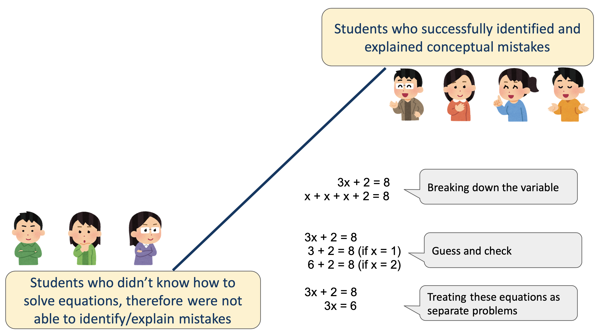
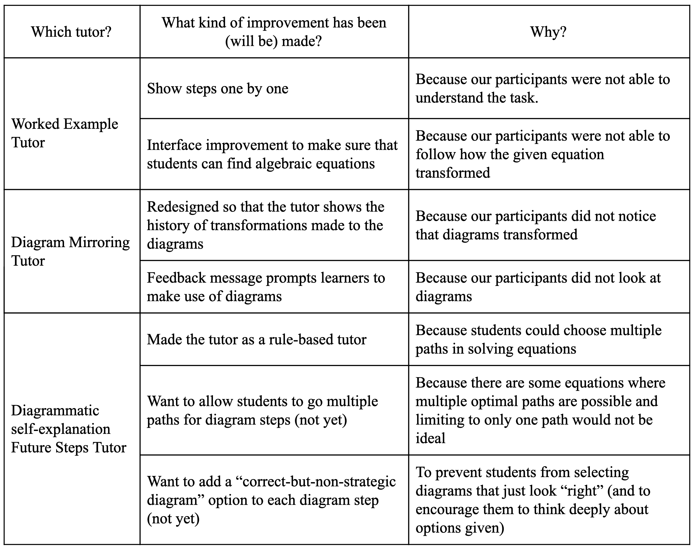
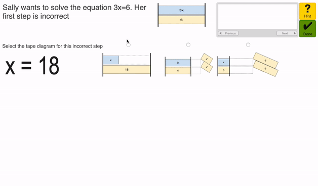
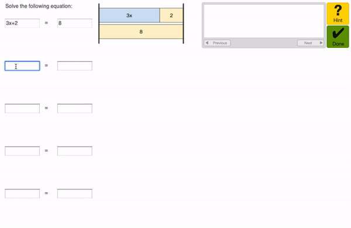
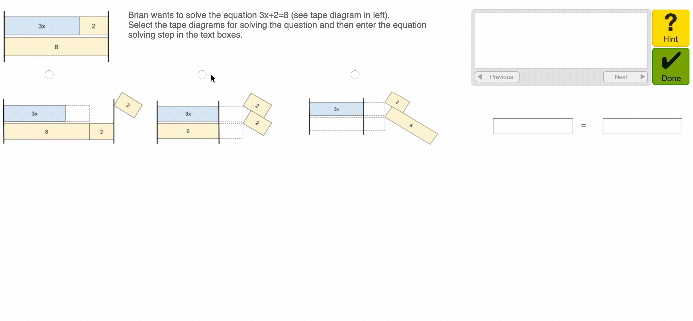
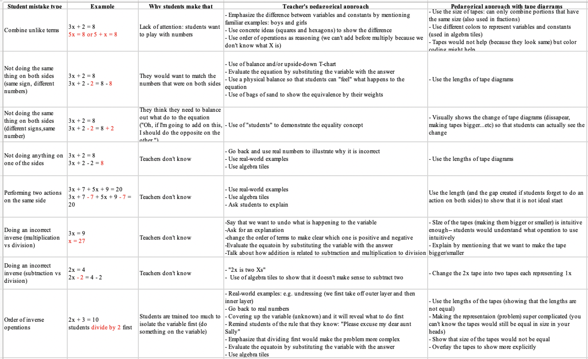
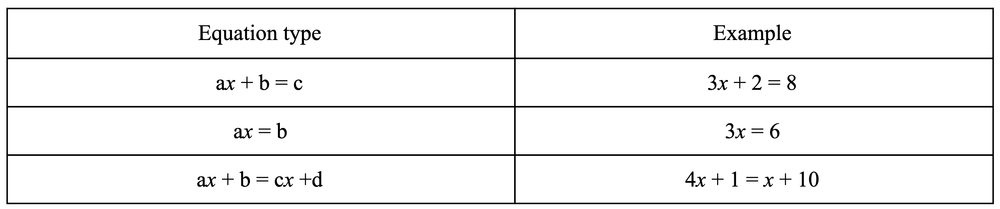

- 1 -
Algebra Equation Solving Tutor
October 2019 - Now
Completed, Currently being tested in a large scale study in U.S. middle schools
Intelligent Tutoring Systems
Cognitive Task Analysis
UI/UX Design
Web Application
Full Stack Development
Cognitive Tutor Authoring Tools
BACKGROUND
This is a class project with CMU Ph.D. student, Tomohiro Nagashima which later turned into a passion project.

PROBLEM SPACE
In Pennsylvania, 60% of students do not reach “proficient” on the end-of-course Algebra I test (Pennsylvania Department of Education, 2017).
Too much focus is on learning procedures without any connection to meaning, understanding, or the applications that require these procedures
We started with the design question specifically targeted at conceptual knowledge: How might we help middle-school students understand equation solving conceptually?
After Cognitive Task Analysis, however, we expanded the scope of the question to cover not only students’ conceptual knowledge but also their procedural knowledge: How might we help middle-school students understand equation solving conceptually while also supporting the development of procedural knowledge?
COGNITIVE TASK ANALYSIS
CTA Activities
Participants were given four erroneous worked examples that contained different types of conceptual errors (e.g., combining unlike terms, not keeping the sides of an equation equal). Participants were then asked to identify the conceptual error in each of the examples and to explain why it is not correct and how to correct it. We chose these data for our analysis because the task was quite similar to our original design idea/hypothesis that self-explaining worked examples that contain conceptual errors would help students attend to conceptual aspects of equation solving.
Seven students in grades 5 - 7.
Findings
- Breaking down a variable into multiple “Xs”: some students wrote multiple Xs to find out what each x equals to. For example, for 3x + 2 = 8, they wrote, x + x + x + 2 = 8, and then tried the guess-and-check strategy (below).
- Guess-and-check: randomly trying different numbers (e.g., 1, 2, 3, 4) to see if the answer is one of those numbers.
- Treating intermediate steps of an equation separately from the original equation: some students thought that “x” in each line of the example (e.g., 3x + 2 = 8 and 3x = 6) had different values. So they tried to solve each line separately and got confused.

PROTOTYPES
Three high fidelity example tracing tutors based on CTA findings
The vision we have for tutor is to use instructional aids such as visual representations effectively. Visual representations, when used successfully, can provide an intuitive alternative to algebraic equations that may help students make sense of the problem and problem-solving steps.
- Worked Example Tutor (Incorrect worked examples with tape diagrams, Example-tracing): The tutor first asks students to select tape diagrams for the incorrect equation-solving step shown. Following that, the tutor then asks students to select the diagrams for the correct next step. When students start typing the explanation (at the bottom), they will see the button, “click to see feedback”. By clicking on it, students will be given an example of the correct explanation.
- Diagram Mirroring Tutor: The behavior graph models all the correct and incorrect steps so the student can see their steps in the form of tape diagrams and reflect on what kinds of mistakes they have made.
- Diagrammatic self-explanation of future steps: In this tutor, students will first choose a correct diagram representation for the next step (left) and then work on the algebraic equation (right). Diagram choices will be shown only after all “simplifications” have been done to the algebraic equation.
Resdesign based on 3 learner testings
After making the intial prototypes, we redesigned our tutors based on our user-testing results. Table below shows the kinds of improvements we made (and things we improved) and reasoning for them.

Updated Protoypes
- Worked Example Tutor (Incorrect worked examples with tape diagrams, Example-tracing)
- Diagram Mirroring Tutor
- Diagrammatic self-explanation of future steps



LITERATURE REVIEW
Based on these findings a more thorough analysis of literature review combined with the insights from the learner testing we generated a list of common student mistakes that we are targeting using our tutor:

COGNITIVE TUTOR
Based on the results from user testing and literature review we decided to convert the third prototype (Diagrammatic self-explanation of future steps) into the rule-based tutor.
As you can see in the table below, the intelligent tutor is able to handle these type of equations:

Types of equations covered by tutor.
For each type of tutor, the teacher only need to supply the value of constants in the equations, and the rules written in the backend will automatically generate the tape diagrams for it using CSS and model the possible solutions using Nools (rule engine in JavaScript).
We plan to continue working on the Diagrammatic self-explanation Future Steps tutor and to improve some of its features, including diagram options (e.g., adding a correct-but-non-strategic diagram option), its rules, and feedback/hint messages.
If you are interested in this project, you can try it out here. If you want to take a closer look at the code, you can go through this github repository that has all the code I wrote. Feel free to reach out with any questions!